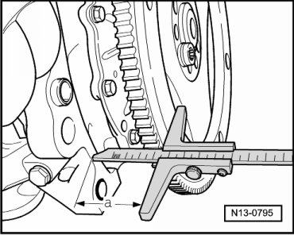

Flex Plate: Service and Repair
Drive Plate
Special tools, testers and auxiliary items required
• Counter-holder tool (T10069)
• Torque wrench (40 to 200 Nm) (V.A.G 1332)
• Depth gauge
Removing
- Remove drive plate. To do so, lock vibration damper using counter-holder tool (T10069).

- Loosen drive plate securing bolts diagonally and remove.
- Remove drive plate.
Installing
- Tighten drive plate on crankshaft with at least 3 old securing bolts to 30 Nm.
- Measure dimension - a - using depth gauge : Specified value: 21.0 to 23.0 mm

If specified value is not reached:
- Remove drive plate again and use appropriate shim - 1 -.

• Only one shim of the appropriate thickness may be used.
If specified value is obtained:
- Insert new bolts and tighten by hand.
- Tighten the bolts to 60 Nm + 90° (1/4 turn) (the additional turn can be done in several steps).